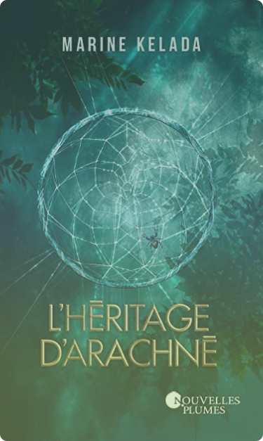
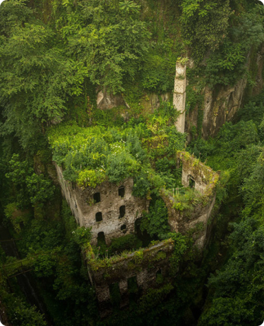

Dicta

Welcome to Dicta
A site that helps people to get to know each other and to discover their universe by sharing my own universe with them,
but that also allows me to ink memories that I could make my family read or that I could read again later in order to go
back to the source and to take a step back in my memory.

A book that made me feel good
Presenting a book? How does it help us in our personal development? Do we read in a mechanical way, I do not think we
read because the book interests us, we take a particular interest in it, we take pleasure in it, it does us good and
relaxes us.
L'héritage d'Arachné

A film that moves me
The wolf children is a film that was directed by Mamoru Hosada in 2012, it is a Japanese animation film that speaks of
family and the difficulties to integrate when you are different. It is a film that in my opinion is sad and has a very
nice moral in any case what I remember is that we must accept the differences that are ours and that of others.
Les enfants loup

Important music that makes me cry
In my opinion, it is important to talk about music because we know that music is an integral part of our life. There are
many different kinds of music, from pop to electro to film music, of course I'm not going to present them all because
they are numerous and varied.
Merry go round
A regret to improve
We all have regrets, they can be personal or they can be regrets about the society, the environment in which we live.
Les jugements et les préavis

A place to visit
One day in my future life I would like to go to Asian countries such as Korea, Vietnam or Japan, to make a road trip and
create memories. I think it's important to set goals in life in order to move forward and even if we make mistakes it's
not serious.
Temple de bambou, Kyoto

A cause to defend
Hope to me is like a life goal, something to fight for and hope for. I believe in a world that will suffer less in the
future, a world where nature takes back its rights.
UN monde vert et plus sain